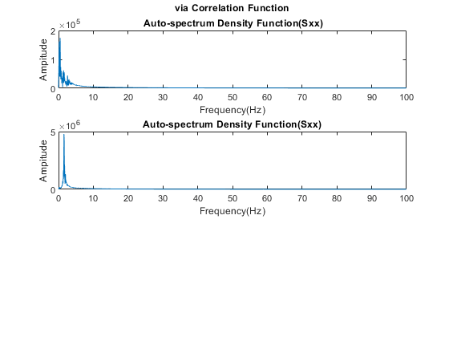
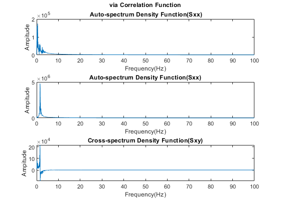
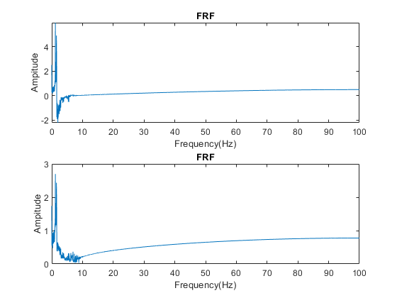
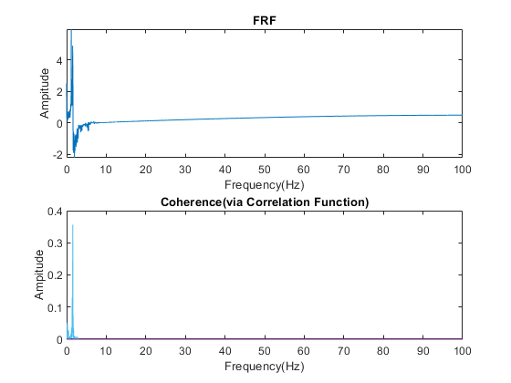

Contents
clc;clear;close all;
data = importdata("HW3- building seismic response data.txt");
t = data(:,1);
x = data(:,2);
y = data(:,3);
T = 0.005;
fs = 1/T;
(a)
[Rxx, lag1] = xcorr(x, length(x)/2);
pt = round((size(Rxx,1)/2));
Rxx = Rxx(1:pt);
Rxx = Rxx(end:-1:1);
pt = round((size(Rxx,1)/2));
Rxx = Rxx(1:pt);
Sxx = abs(fft(Rxx));
fxx = (0:pt-1)*((T*pt)^-1);
subplot(3,1,1);
plot(fxx(1:pt/2),Sxx(1:pt/2)*2/pt);
xlabel('Frequency(Hz)');
ylabel('Ampitude');
title('via Correlation Function','\bf Auto-spectrum Density Function(Sxx)');
[Ryy, lag2] = xcorr(y, length(x)/2);
pt = round((size(Ryy,1)/2));
Ryy = Ryy(1:pt);
Ryy = Ryy(end:-1:1);
pt = round((size(Ryy,1)/2));
Ryy = Ryy(1:pt);
Syy = abs(fft(Ryy));
fyy = (0:pt-1)*((T*pt)^-1);
subplot(3,1,2);
plot(fyy(1:pt/2),Syy(1:pt/2)*2/pt);
xlabel('Frequency(Hz)');
ylabel('Ampitude');
title('Auto-spectrum Density Function(Sxx)');
Warning: Integer operands are required for colon operator when used as index.
Warning: Integer operands are required for colon operator when used as index.
Warning: Integer operands are required for colon operator when used as index.
Warning: Integer operands are required for colon operator when used as index.

(b)
[Rxy, lag3] = xcorr(x, y, length(x)/2);
[Ryx, lag4] = xcorr(y, x);
pt = round((size(Rxy,1)/2));
Rxy = Rxy(1:pt);
Ryx = Ryx(1:pt);
Rxy = Rxy(end:-1:1);
Ryx = Ryx(end:-1:1);
pt = round((size(Rxy,1)/2));
Rxy = Rxy(1:pt);
Ryx = Ryx(1:pt);
lxy = 0.5*(Rxy+Ryx);
qxy = 0.5*(Rxy-Ryx);
Lxy = real(fft(lxy));
Qxy = real(fft(qxy));
Sxy = Lxy-Qxy*1i;
fxy = (0:pt-1)*((T*pt)^-1);
subplot(3,1,3);
plot(fxy(1:pt/2),Sxy(1:pt/2)*2/pt);
xlabel('Frequency(Hz)');
ylabel('Ampitude');
title('Cross-spectrum Density Function(Sxy)');
saveas(gcf,'HW4_1CorrelationFnx.png');
Warning: Integer operands are required for colon operator when used as index.
Warning: Integer operands are required for colon operator when used as index.
Warning: Imaginary parts of complex X and/or Y arguments ignored.

(c)
hf1 = Sxy./Sxx;
subplot(2,1,1);
plot(fxy,hf1);
xlim([0 100]);
xlabel('Frequency(Hz)');
ylabel('Ampitude');
title('FRF');
hf2 = (Sxy./Sxx).^0.5;
subplot(2,1,2);
plot(fxy,hf2);
xlim([0 100]);
xlabel('Frequency(Hz)');
ylabel('Ampitude');
title('FRF');
saveas(gcf,'HW4_2CorrelationFnx.png');
Warning: Imaginary parts of complex X and/or Y arguments ignored.
Warning: Imaginary parts of complex X and/or Y arguments ignored.

(d)
gammasqr = (abs(Sxy).^2/(Sxx.*Syy));
plot(fxy,gammasqr);
xlim([0 100]);
xlabel('Frequency(Hz)');
ylabel('Ampitude');
title('Coherence(via Correlation Function)');
saveas(gcf,'HW4_3CorrelationFnx.png');
